Na predaj 2-izbový tehlový byt po rekonštrukcii | výborná lokalita | 3 minúty od vlakovej a autobusovej stanice
Komárno
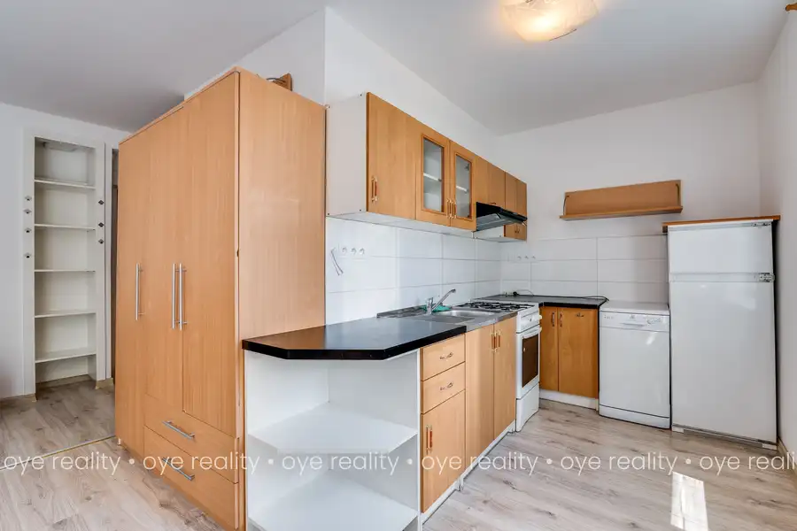
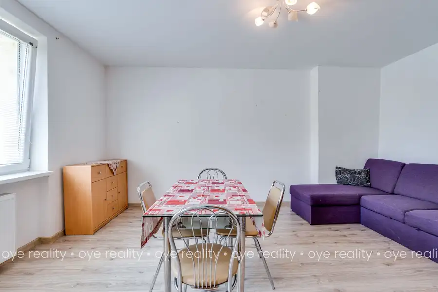
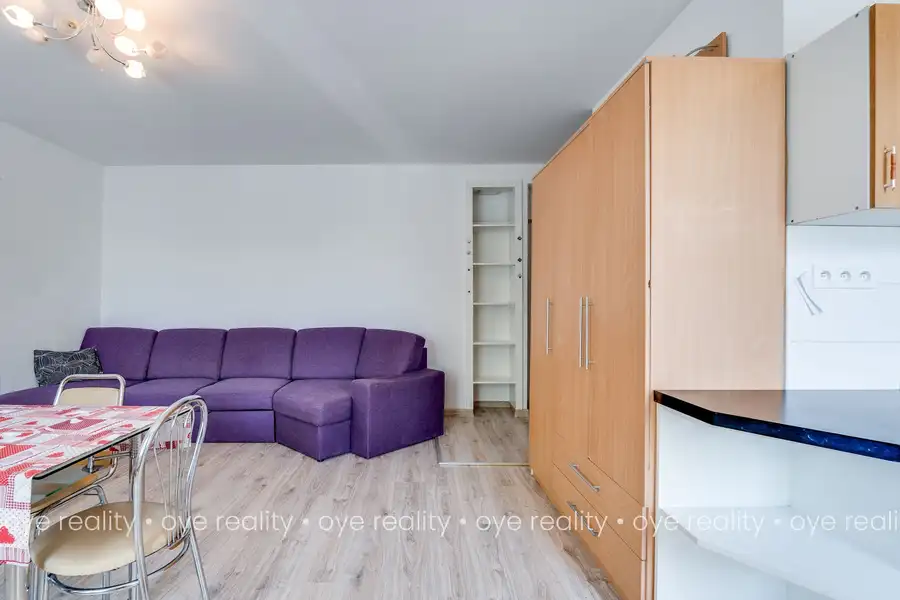
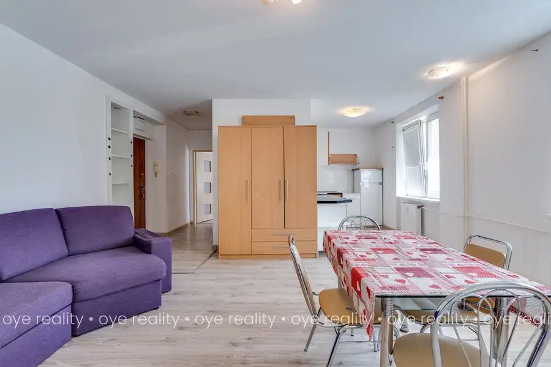
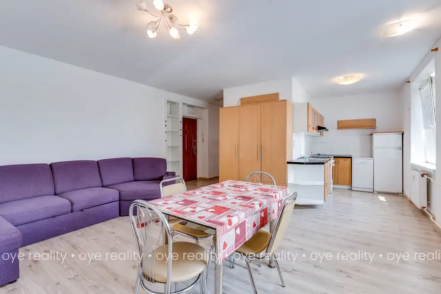
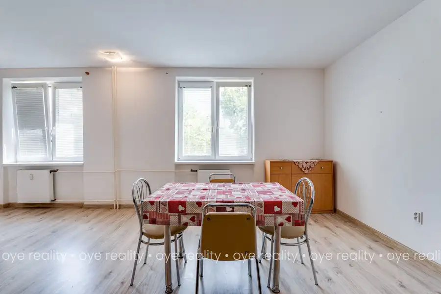
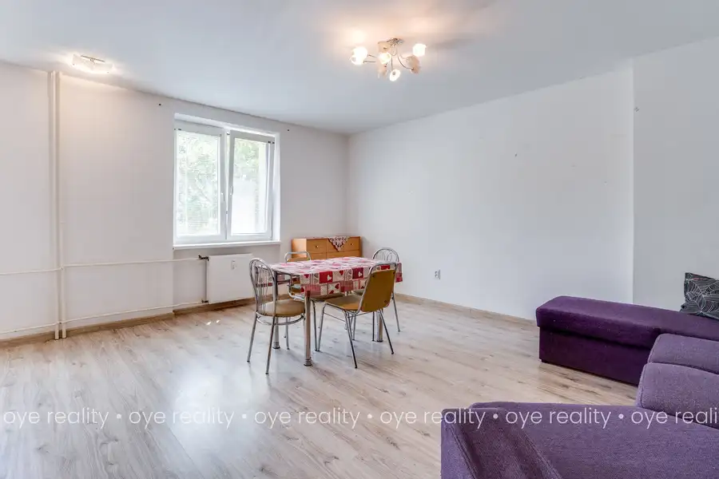
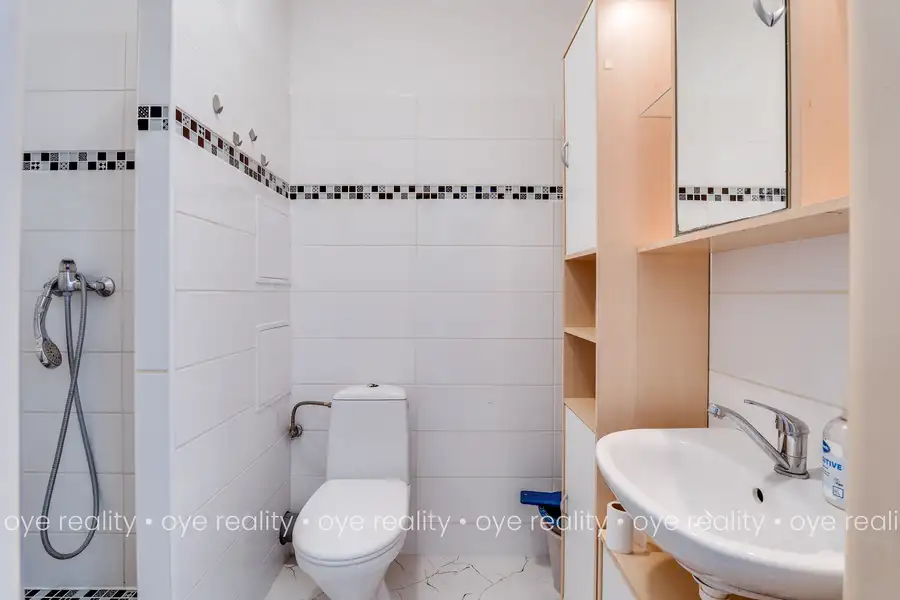
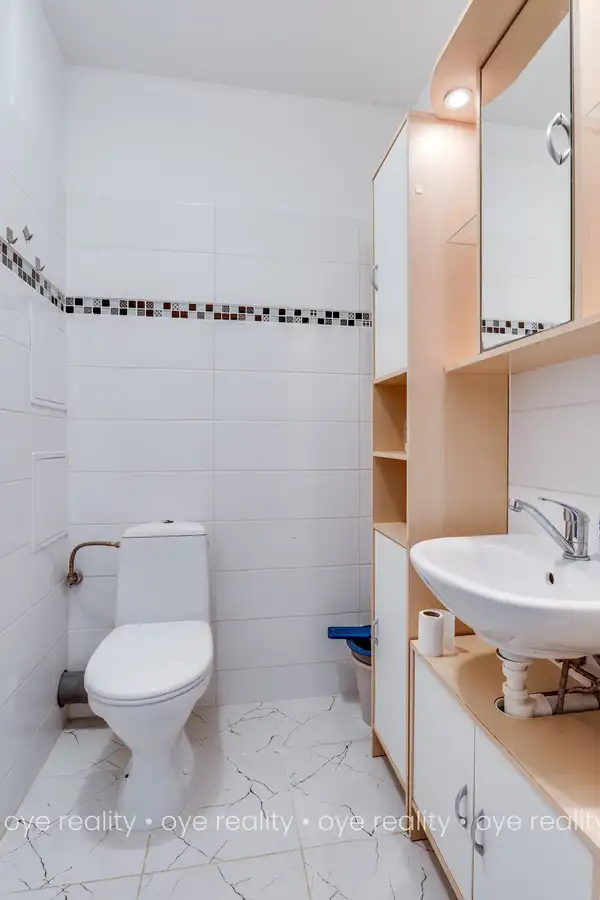
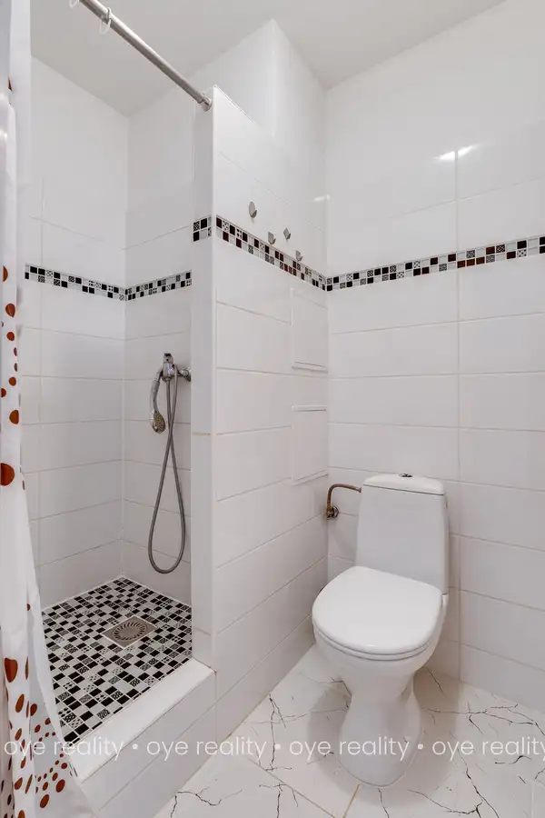
- Dispozícia2-izbový
- Plocha54 m²
- Poschodie2. z 3
- StavKompletná rekonštrukcia
O nehnuteľnosti
Miesto, kde sa býva pohodlne už od prvého dňa.Niektoré byty zaujmú na prvý pohľad. Iné si vás získajú tým, čo ponúkajú do budúcnosti. Tento 2-izbový byt spája oboje – výbornú polohu, kvalitný základ po rekonštrukcii a možnosť dotvoriť si bývanie presne podľa vlastných predstáv.Nachádza sa na 2. poschodí v zateplenom tehlovom bytovom dome, pri Trhovisku, ktorý prešiel zateplením približne pred šiestimi rokmi. V roku 2021 prešiel samotný byt rozsiahlou rekonštrukciou – boli vymenené rozvody elektriny a vody, radiátory, podlahy, dlažby aj obklady. Vďaka tomu vás čaká pevný základ bez nákladných stavebných zásahov.Dispozícia bytu je praktická a vzdušná:•kuchyňa prepojená s obývacou izbou,•samostatná spálňa,•kúpeľňa so sprchovým kútom a WC,•chodba.Byt sa predáva kompletne zariadený, takže sa môžete nasťahovať alebo ho okamžite pripraviť na prenájom. Súčasťou vybavenia je kuchynská linka, digestor, plynový sporák s elektrickou rúrou, umývačka riadu, chladnička s mrazničkou, jedálenský stôl so stoličkami, pohovka, skriňa a rozkladacie kreslo.Veľkým benefitom je priestranná pivnica s rozmermi približne 2,5 × 2 m, ktorá poskytuje dostatok úložného priestoru.To, čo robí túto ponuku výnimočnou, je jej poloha. Byt sa nachádza vo frekventovanej časti mesta, pričom autobusová aj železničná stanica sú vzdialené len približne 3 minúty. Či už denne dochádzate za prácou, štúdiom alebo často cestujete, ušetríte čas každý jeden deň.V bezprostrednom okolí nájdete všetko, čo robí život pohodlnejším:•autobusovú a vlakovú stanicu,•nemocnicu,•obchody,•trhovisko,•taxislužbu,•kompletnú občiansku vybavenosť.Ďalšie výhody:•zateplený tehlový bytový dom,•bezpečnostné vstupné dvere,•plastové okná so sieťkami proti hmyzu a vnútornými žalúziami,•zavedený plyn,•bezproblémové parkovanie priamo pri dome,•príjemní susedia,•nízke mesačné náklady.Tento byt je ideálnou voľbou pre mladý pár, jednotlivca alebo investora, ktorý hľadá nehnuteľnosť s vysokým potenciálom prenájmu. Stačí už len pridať vlastný štýl a vytvoriť domov, do ktorého sa budete radi vracať.Ak hľadáte nehnuteľnosť na výbornom mieste s kvalitným základom a priestorom pre vlastné predstavy, neváhajte nás kontaktovať. Radi vám byt osobne predstavíme na obhliadke.V cene je zahrnutá provízia realitnej kancelárie OYE Reality, kompletný právny servis, autorizované zmluvy a všetky poplatky spojené s predajom.Nevyhovuje Vám táto ponuka? Kontaktujte nás. Radi Vám pomôžeme nájsť ideálne bývanie z ponuky celého trhu.________KontaktAdrián Lévay, RSc.0905 777 001levay@oye.sk________OYE REALITY, 2026Všetky údaje uvedené v tomto inzeráte majú informatívny charakter a nepredstavujú návrh na uzavretie zmluvy. Realitná kancelária nezodpovedá za prípadné nepresnosti vyplývajúce z podkladov poskytnutých tretími stranami. Texty, fotografie a grafické materiály sú chránené autorským právom.
Parametre
- Cena vrátane energií
- Nie
- Doprava
- Diaľnica, MHD, Vlak, Diaľkový autobus
- Druh
- 2 izbový byt
- Dátum zverejnenia
- 12. 07. 2026
- Energetická náročnosť
- Z klasických materiálov
- Energetický certifikát budovy
- nie je
- Plocha predzáhradky
- 24 m²
- Podlažie
- 2
- Počet nadzemných podlaží
- 3
- Počet pivníc
- 1
- Počet spální
- 1
- Stav nehnuteľnosti
- Kompletná rekonštrukcia
- Telekomunikácie
- Optická sieť, Káblová TV, Satelit
- Typ
- Predaj
- Typ konštrukcie
- Tehlová
- Vybavenie
- Pivnica, Predzáhradka, Verejné parkovanie
- Vykurovanie
- Ústredné
- Úžitková plocha
- 54 m²
Kde to je


Mohlo by Vás zaujímať
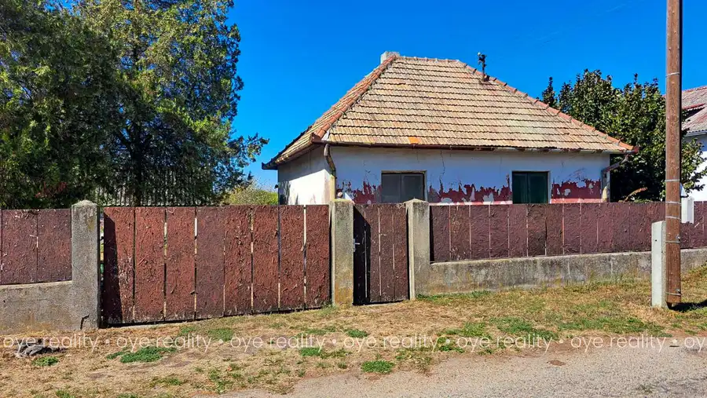
DomNové 45 000 €Na predaj rodinný dom na rekonštrukciu v Kravanoch nad Dunajom Kravany nad Dunajom 110 m²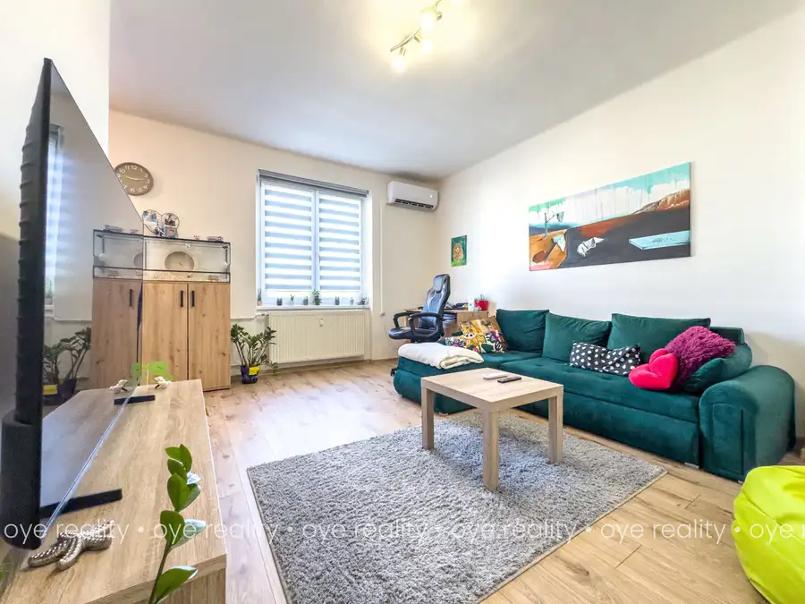
BytNové 96 500 €Bývanie, kde máte celé Komárno na dosah | na predaj 2-izbový tehlový byt na Mederčskej ulici Komárno 2-izbový53 m²3. podlažie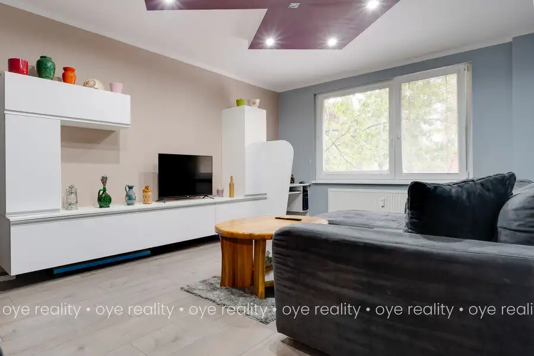
BytNové 122 900 €OYE Reality | Na predaj zrekonštruovaný 3-izbový byt s vybavením – ulica Komenského, Komárno Komárno 3-izbový66 m²1. podlažie